design-critic round 2 (2026-10-28, critique-2026-10-28.md): B PASS (mean 4.1), A PASS (mean 4.0), ranked B then A. C REDO (taste, mean 3.8) and is not offered below.
Where the settings for all fliers live
FLIER-2 "Flier Studio follow-ups", AC-18 select on click · AC-19 "All fliers" section · AC-20 double-click enlarge · AC-21..23 drafts and favourites (D11, D12). Before = live https://fliers.dloizides.com at 98ca2bc; after = the same build with the option drawn in by moving its real controls (mockup, `mockups.ts`). Same route, steps, fixture (Kizomba preset, 4 fliers, fresh storage), viewport and anchor on both sides (`result.json`, pairMethod same-steps). Inventory: 52/52 first-load items for the one role, Visitor, measured in `result.json` (63 rows in `FLIER-2-AC18-20-inventory.md`: 11 are state-only and not on any first-load frame; "Theme applies to" is dropped by D11 in every option). Round 2 probes, run on every frame and failing the capture run on a miss: side-by-side form controls share top edge and height within 1px; the enlarged flier and its buttons sit inside 360x640 and 1280x800 with no scrolling; no text leaves its card.
A. "All fliers" card on top of the previews
Theme and "Shared text edits apply to" sit side by side in one short card above the fliers they change, with Add flier under them; the first flier starts at y = 485 at 1280 (round 1: 767). Drafts get their own card under the previews with an All (12) / Favourites (1) filter. Click a flier to edit it; double-click opens the full-size sheet the phone bar already uses.
Inventory: 52/52 (4 moved into the card, 1 dropped D11) · form rows aligned: pass (top + height, 0 pairs off by more than 1px) · enlarge fits 360x640 and 1280x800 · Drafts: own card under the previews, All / Favourites chips, Restore + Star per draft.
First load, 1280x800, full page
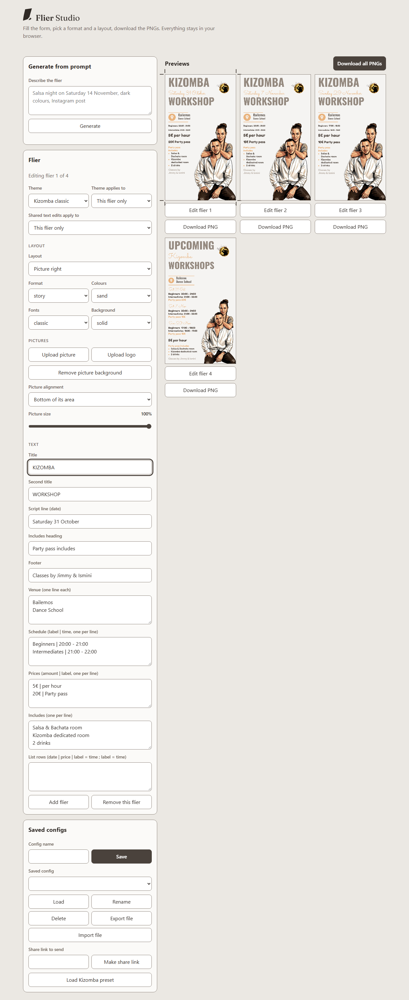
Before
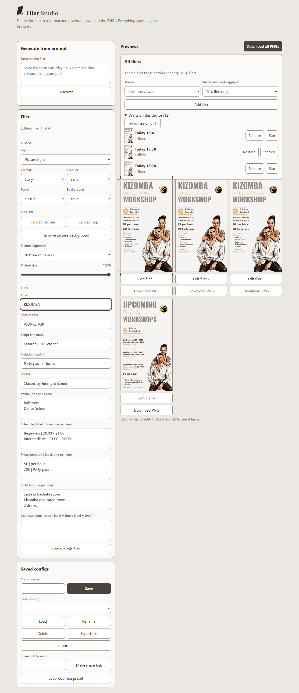
After
First load, 360x640, full page
BeforeAfter
Double-click flier 2
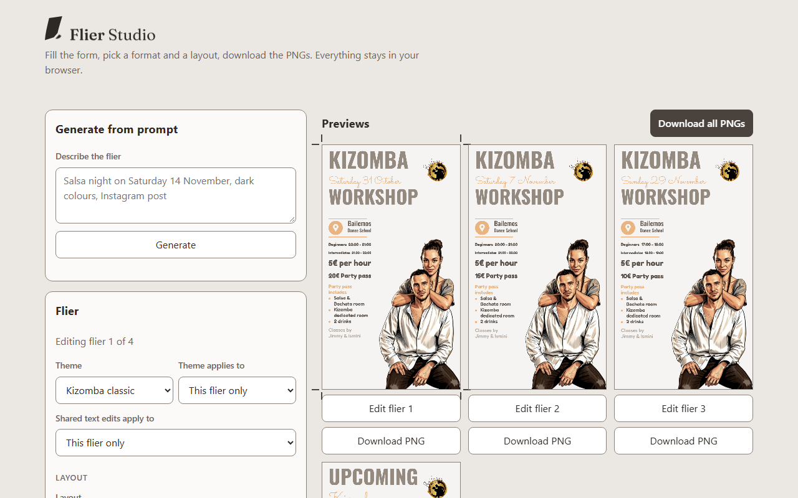
Before, 1280
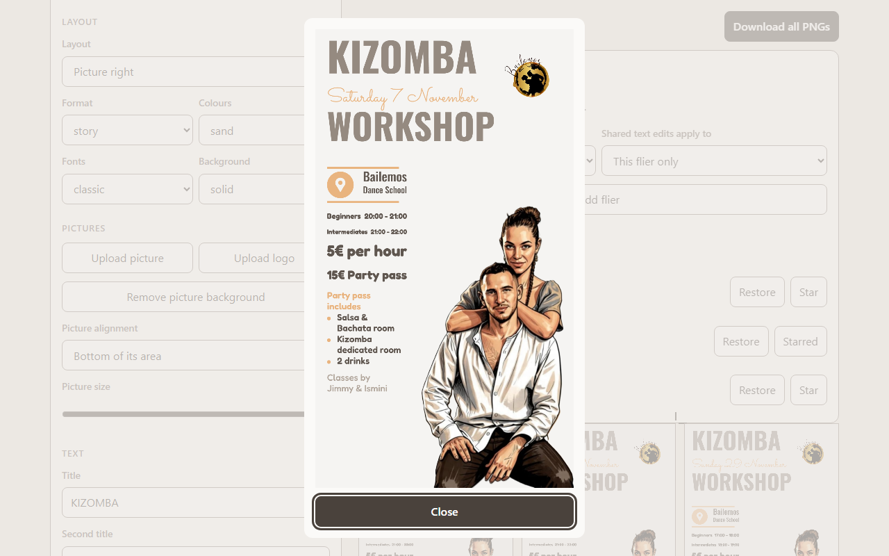
After, 1280
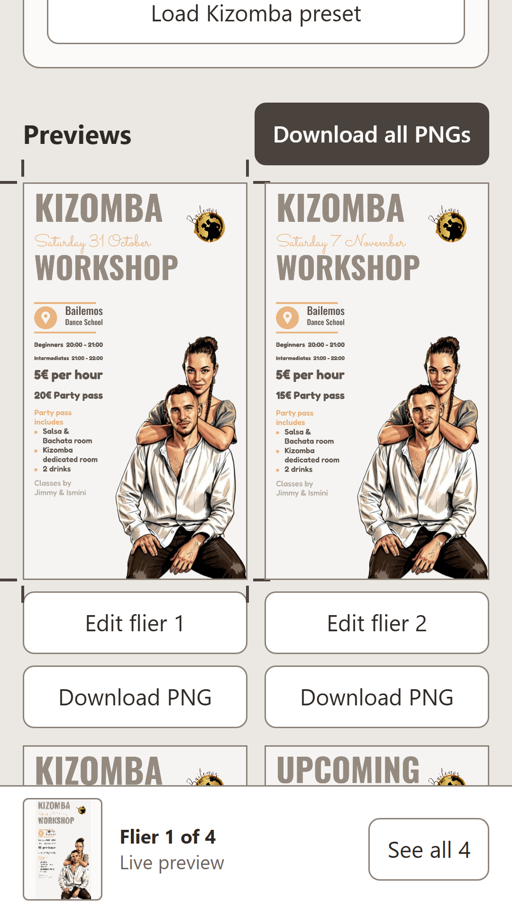
Before, 360
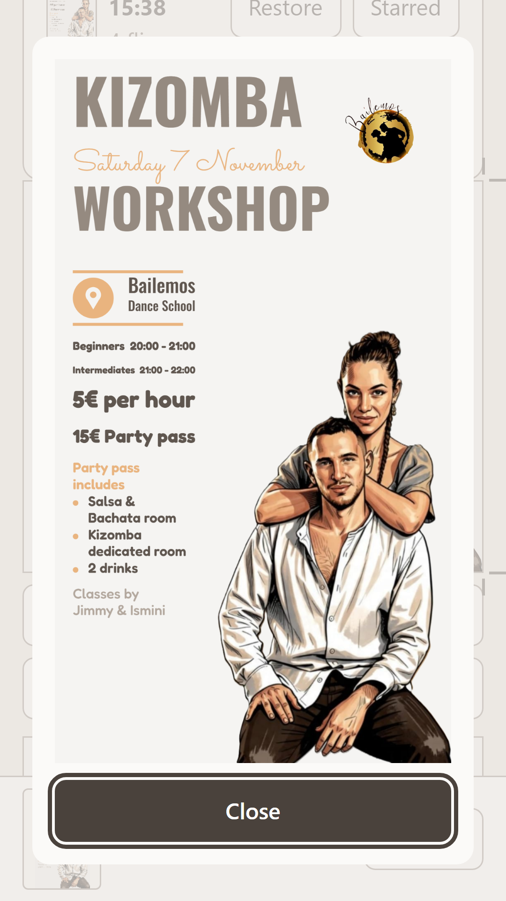
After, 360
Screen
Focused on open (FOCUS-1)
Why
Studio
Title field at ≥1024, none on phone (today)
The title is the first thing to change; no keyboard pop on phone
Enlarge sheet
Close
Looking is the job; Close (or Esc) returns focus to the flier
B. "All n fliers" card first in the controls column
Everything that acts on the whole set gathers in one card above the Flier form: Theme, the shared-edits scope, Add flier, Download all and the share link. Below 400px wide, Add flier and Download all PNGs stack full width; wider, they share one row at one height. Drafts get their own card under Saved configs. Double-click opens a larger dialog that steps through the set.
Inventory: 52/52 (6 moved into the card, 1 dropped D11) · form rows aligned: pass (top + height) · enlarge fits both viewports · Drafts: own card, All / Favourites chips.
First load, 1280x800, full page
Before
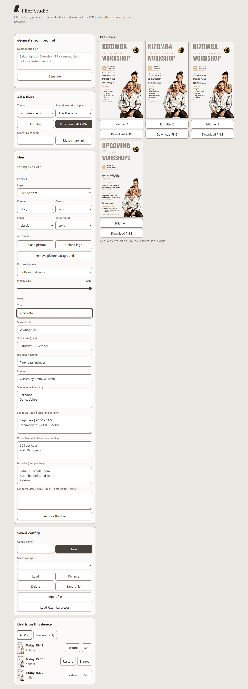
After
First load, 360x640, full page
BeforeAfter
Double-click flier 2
Before, 1280
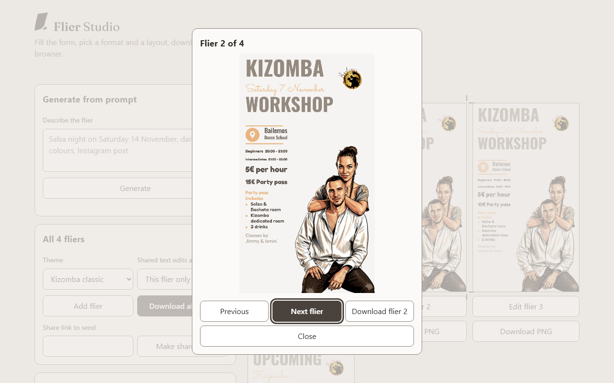
After, 1280
Before, 360
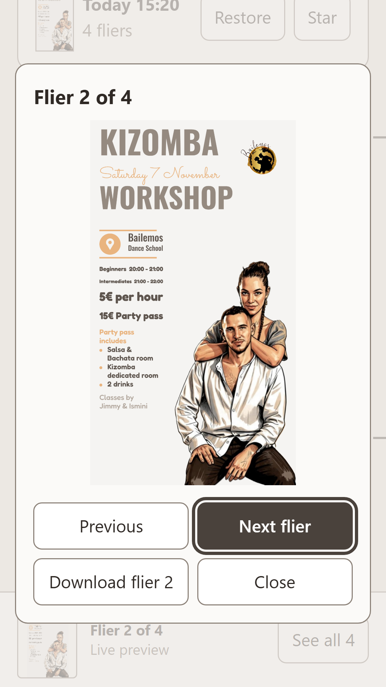
After, 360
Screen
Focused on open (FOCUS-1)
Why
Studio
Title field at ≥1024, none on phone (today)
Unchanged
Enlarge dialog
Next flier
The dialog is for checking the set; Esc returns focus to the flier
C. Sticky set bar with one chip per theme
Withdrawn — do not pick. design-critic round 2: REDO (mean 3.8; #1, #3 and #7 at 3; fixes in critique-2026-10-28.md).
A bar pinned to the top of the previews while they scroll: one chip per theme, so a switch is one tap and its effect is in view, plus the scope, Add flier and Download all. Add flier and Download all PNGs stack below 400px wide. Drafts sit as thumbnail tiles under the fliers, wrapping to two per row on a phone so no tile is cut. Double-click opens the full-size sheet with the flier number and a Download, sized so the whole flier and its buttons fit 360x640 and 1280x800.
Inventory: 52/52 (Theme select becomes chips, 4 moved into the bar, 1 dropped D11) · form rows aligned: pass (top + height) · enlarge fits both viewports · Drafts: wrapping tiles below the previews, All / Favourites chips.
First load, 1280x800, full page
Before
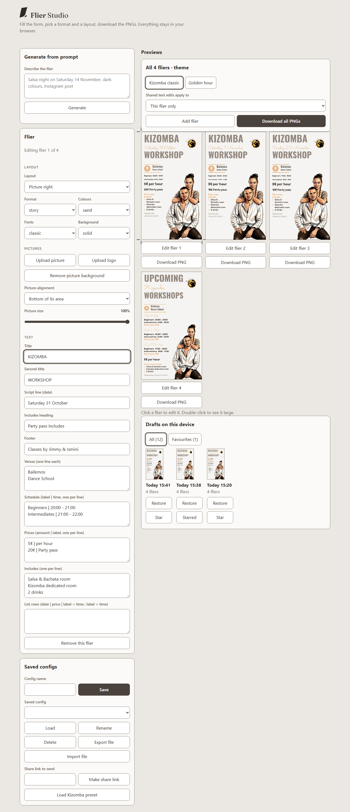
After
First load, 360x640, full page
BeforeAfter
Double-click flier 2
Before, 1280
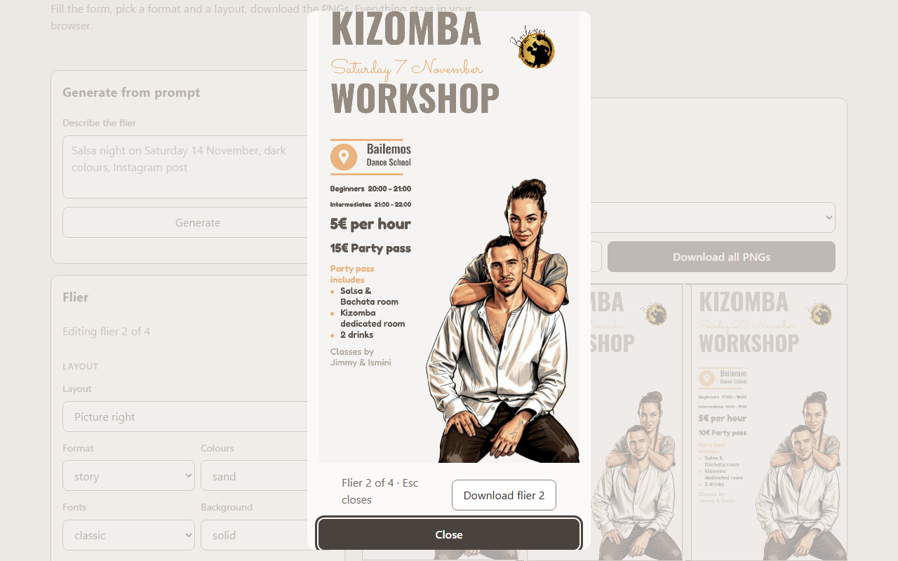
After, 1280
Before, 360
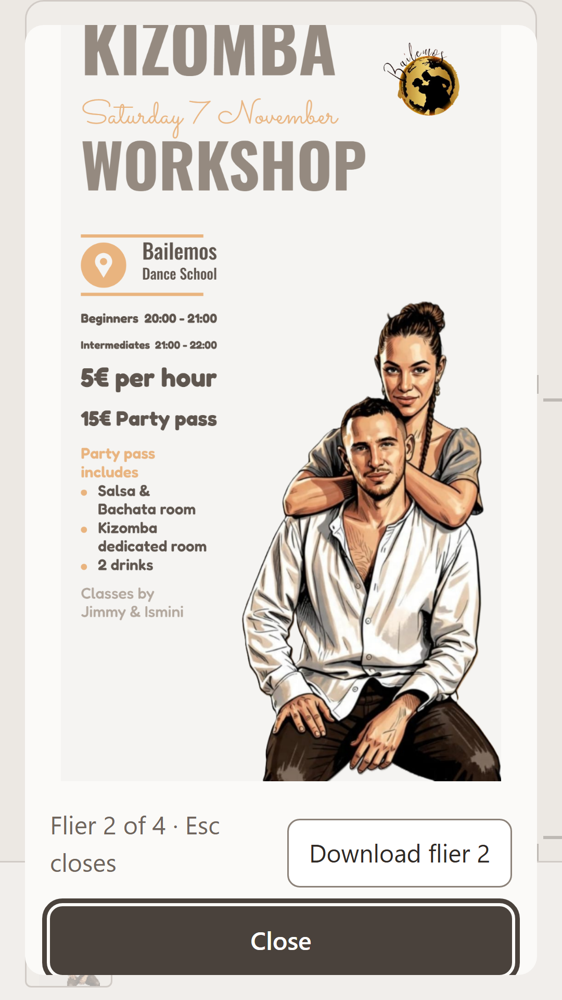
After, 360
Screen
Focused on open (FOCUS-1)
Why
Studio
Title field at ≥1024, none on phone (today)
Unchanged
Enlarge sheet
Close
Same sheet as the phone bar; Esc returns focus to the flier
Q1 Which layout should Flier Studio build for the "All fliers" settings, drafts and enlarge view?
A"All fliers" card on top of the previews, drafts in their own card under the fliers, the existing full-size sheet
B"All n fliers" card first in the controls, drafts in their own card, a stepping dialog
Both keep 52/52 first-load items and select a flier on click. Critic rank: B first (fliers stay at the top of the desktop page), A second. They differ in where the whole-set settings sit relative to the fliers they change.